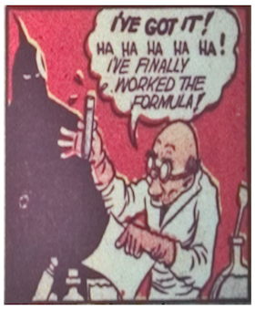
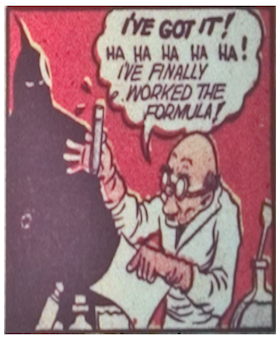

Captain Marvel
In response to the popularity of Superman and Batman, Fawcett Comics introduced Captain Thunder in the 1939 issue of Flash Comics #1. The issue was an ashcan copy, a term for low-print runs whose purpose was not sales but to establish a trademark claim for legal purposes. Due to trademark infringements with another established character, Captain Thunder became Captain Marvelous and later Captain Marvel. Flash Comics became Whiz Comics (also due to trademark issues.)
Captain Marvel's alter ego was a 12-year old radio reporter named Billy Batson, a copy of Superman's alter ego, reporter Clark Kent, but younger to appeal to adolescent readers. Billy Batson's name was partially based on the nickname given to Fawcett Publication's founder Wilford Fawcett — "Captain Billy".